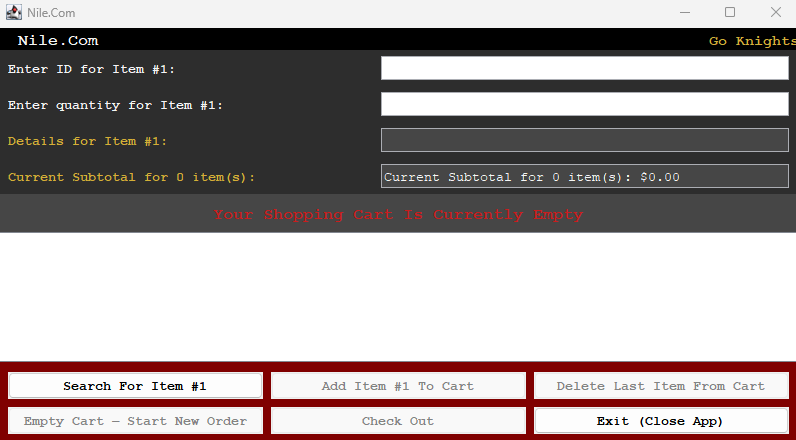
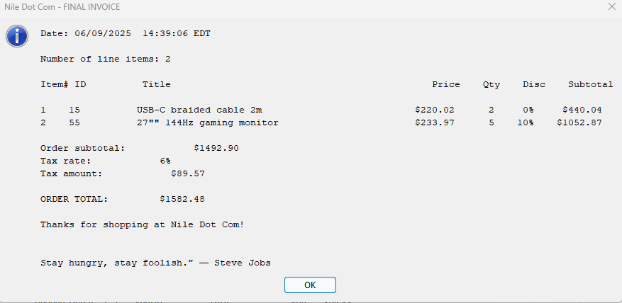
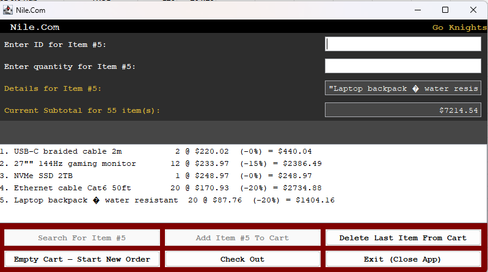
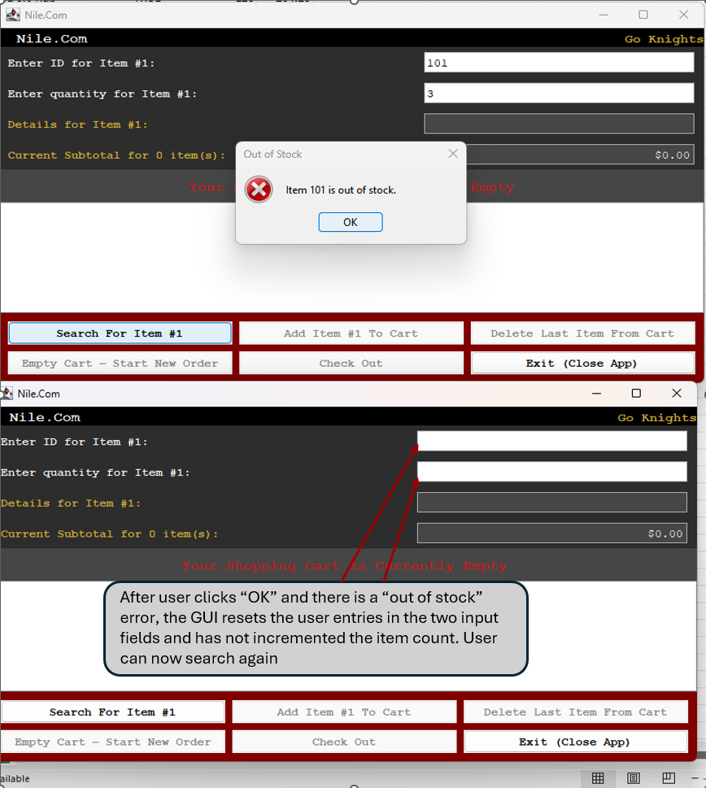

Overview
In this project I developed an event-driven e-commerce application in Java, named “Nile Dot Com.” The interface connects user actions—button clicks and text input—to handlers that manage the cart and order flow. Product data is read from inventory.csv, and the program validates item IDs and requested quantities, presenting clear dialogs for out of stock or not found entries.
At checkout, the application computes the subtotal, applies sales tax and quantity-based discounts, generates a invoice, and appends a transaction record to a transactions.csv. Each record uses a timestamp derived transaction ID to support basic auditing and traceability
Capabilities
- Search by item ID
- Add / remove from cart
- Compute subtotal, tax, discounts
- Finalize order/log invoice
How It Works
- Load items from inventory.csv at launch.
- User enters an item ID and quantity; “Search” retrieves details if available.
- “Add to Cart” updates cart state and running totals.
- “Delete Last Item' removes the most recent addition and adjusts the subtotal.
- “Check Out” computes totals, shows an invoice, and appends to transactions.csv.
Skills Learned
- Designed and implemented a Java-based e-commerce application with a GUI.
- Applied object-oriented principles to structure inventory, cart, and transaction logic
- Utilized CSV file I/O for data management and persistent transaction logging
- Strengthened validation, error handling, and invoice generation for reliable system behavior.
Screenshots



